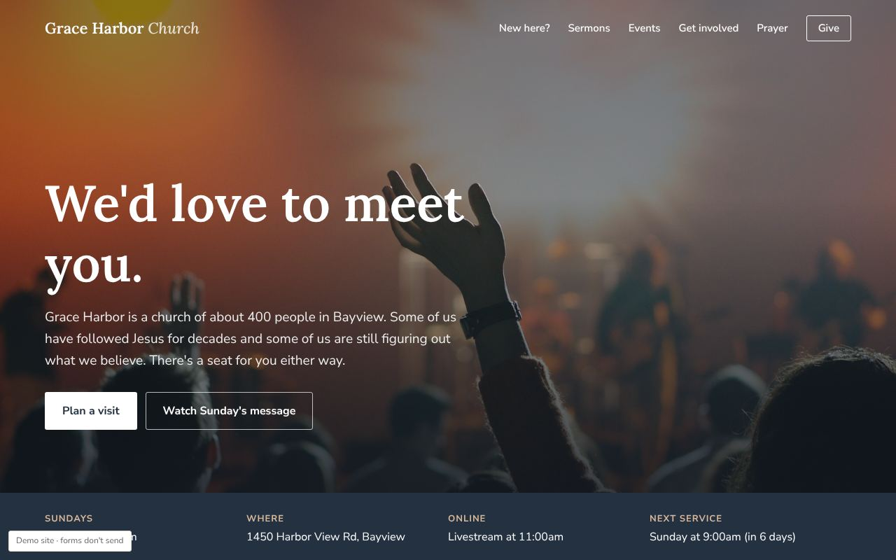
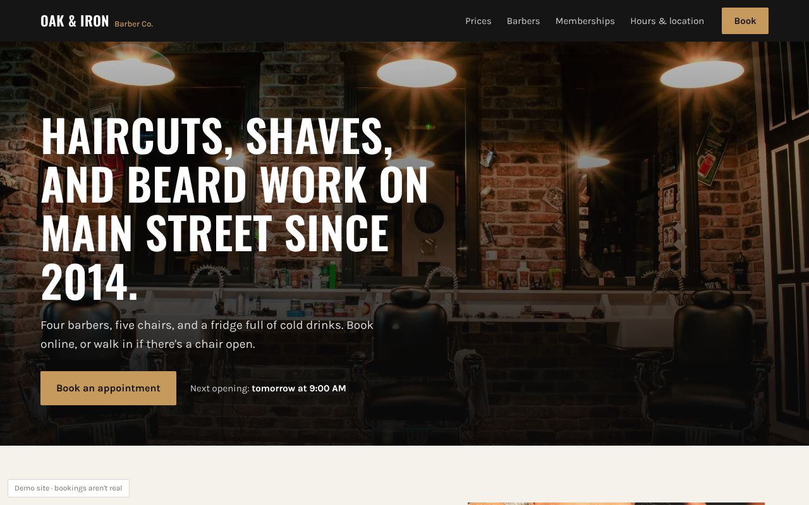

Sample sites
These are three example websites we built to show what's possible for a small business. The businesses are made up, but everything works: you can place an order, book a haircut, or RSVP to an event. Nothing actually gets sent anywhere, so click around as much as you like.

Smoke & Salsa
A taco truck that takes orders online so people can skip the line.
- Menu with photos, add-ons, and a cart
- Checkout with pickup time, plus an order status screen
- Weekly schedule of where the truck will be
- Catering price estimate and request form

Grace Harbor Church
A church site built around making first-time visitors feel comfortable.
- "Plan a visit" form and first-Sunday FAQ
- Sermon archive with search and an audio player
- Events with RSVPs
- Prayer requests and online giving

Oak & Iron Barber Co.
A barbershop where customers book their own appointments, any time of day.
- Booking: pick a service, a barber, and an open time
- Add the appointment to your calendar, or cancel it
- Barber profiles, price list, and memberships
- Hours that show whether the shop is open right now
Want one for your business?
Every site we build starts from your photos, your prices, and the way you actually talk to customers. Most small business sites take two to four weeks from first call to launch.
Email hello@example.com or call (555) 000-0000 and tell us a little about what you do.